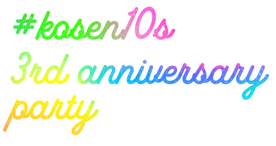
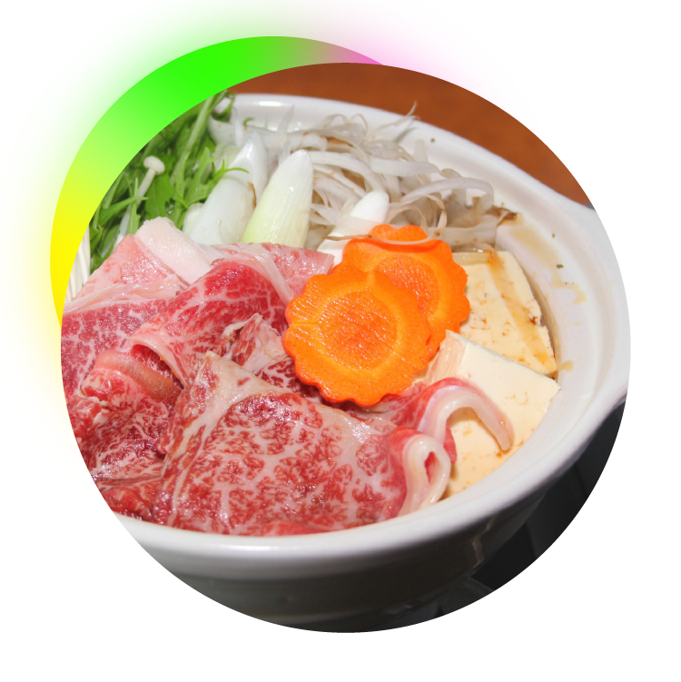
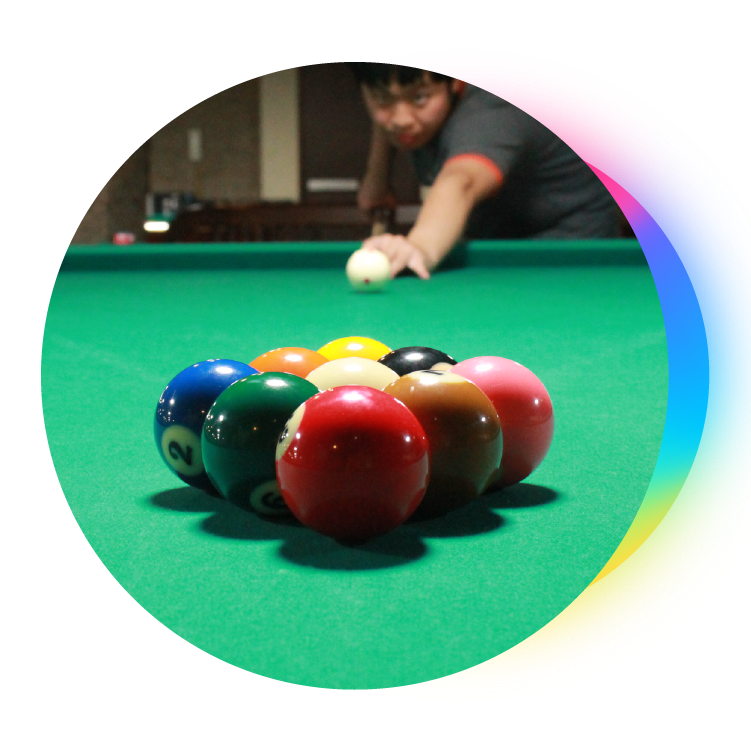
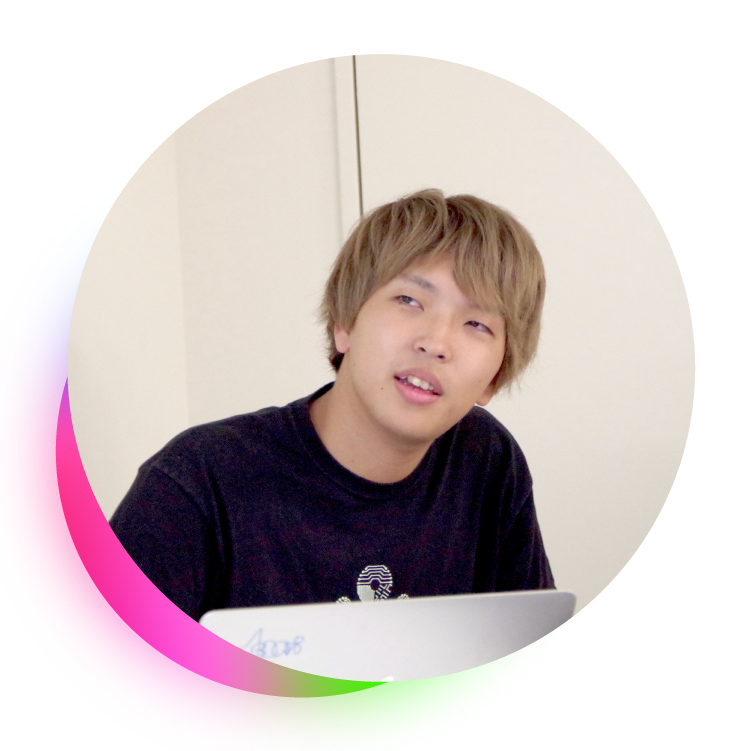

<!DOCTYPE html><html lang="ja"><head><meta charset="utf-8"><link rel="stylesheet" href="css/style.css"><meta name="viewport" content="width=device-width,initial-scale=1"><title>kosen10s 3rd anniversary party</title><meta name="viewport" content="width=device-width, initial-scale=1"><meta name="description" content="3連休はkosen10sで過ごそう"><meta name="keywords" content="kosen10s"><meta property="og:title" content="kosen10s 3rd anniversary party"><meta property="og:type" content="website"><meta property="og:url" content="http://kosen10s.net/3rd-anniversary/"><meta property="og:image" content="http://kosen10s.net/3rd-anniversary/img/ogp.png"><meta property="og:site_name" content="kosen10s 3rd anniversary party"><meta property="og:description" content="3連休はkosen10sで過ごそう"><meta property="twitter:card" content="summary"></head><body><header><div class="right"></div><div class="left"><h2></h2><h1></h1><p>2017.11.03 - 05 @ 渋谷近辺</p></div></header><section class="message"><h3></h3><p>kosen10sが始まって三周年ということで、
kosen10sにおける三周年記念イベントって何があるかなあ…
と考えたのですが、kosenconfやその他の大きなコミュニティとは違って
僕らはすごく限定的で狭いコミュニティだなあと思いまして。
高専卒で、しかも同い年しか受け付けないというのは正直すごく門が狭い。
でもそこに「親しみやすさ」「楽しさ」みたいなモノを見出してるから
みんな関わってくれるんだろうなあと。</p><p>だからこそ、(今回は)大きい規模のLT会開催などの門を広げる方向ではなく
「仲のいい連中」っぽいイメージの三周年記念イベントを行いたい、
ということで友達と過ごすイメージの３日間を企画してみました。</p><p>今回初参加の人もきっとみんなと仲良くなれるし、
いつもの顔なじみも普通に楽しめると思うんでみんなでともかく遊びましょ！</p><p class="by-denari">― 今回の企画人  @denari01</p></section><section class="schedule"><div class="schedule-day day1"><div class="schedule-thumbnail"></div><div class="schedule-detail"><div class="schedule-title"><h4>お鍋の日</h4><span>11.3 (Fri)</span></div><p>夕方以前の予定は各位で適当にやっていこう</p><dl><dt>17:30</dt><dd>集合 (渋谷駅近辺)</dd><dt>17:50</dt><dd>近所のお店で基本的な買い出し</dd><dt>18:40</dt><dd>調理開始 @ うなすけの家</dd><dt>19:00</dt><dd>食べたり飲んだりする</dd></dl><p>あとは流れで鍋とかオタクコンテンツをYEAHする<br>うなすけの家を燃やす</p></div></div><div class="schedule-day day2"><div class="schedule-thumbnail"></div><div class="schedule-detail"><div class="schedule-title"><h4>おしゃスポの日</h4><span>11.4 (Sat)</span></div><p>おしゃれスポーツの略 / 主にダーツとビリヤード</p><dl><dt>12:00</dt><dd>集合 (渋谷駅近辺)</dd><dt>12:30</dt><dd>近所のお店で基本的な買い出し</dd><dt>14:00</dt><dd>ダーツ</dd><dt>18:00</dt><dd>夜のガッツリ飲み</dd><dt>20:00</dt><dd>ビリヤード</dd></dl><p>あとは流れでオタクカラオケとかをYEAHする<br>うなすけの喉を燃やす</p></div></div><div class="schedule-day day3"><div class="schedule-thumbnail"></div><div class="schedule-detail"><div class="schedule-title"><h4>LT #10の日</h4><span>11.5 (Sun)</span></div><p>@Spicelife社オフィス</p><dl><dt>12:40</dt><dd>開場 (予定)</dd><dt>13:00</dt><dd>オープニング</dd><dt>13:05</dt><dd>自己紹介LT (全員必須 / 5分)<br>自由LT (当日参加OK / 自由参加 / 時間は適当)</dd><dt>18:00</dt><dd>懇親会</dd></dl><p>あとは流れでオタクおしゃスポとかをYEAHする<br>うなすけの財布を燃やす</p></div></div></section><section class="connpass"><p class="large">楽しい三連休はkosen10sで</p><a href="https://kosen10s.connpass.com/event/69541/"></a><p>Slackの#3rd-anniversaryにJoinよろ</p></section><footer><ul><li><a href="https://twitter.com/kosen10s/">Contact</a></li><li><a href="http://kosen10s-invite.herokuapp.com">Join us</a></li></ul><p><small>&copy; 2017 kosen10s</small></p></footer><script src="js/app.babel.js"></script></body></html>